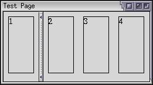
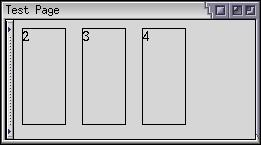
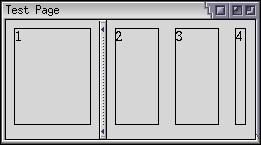
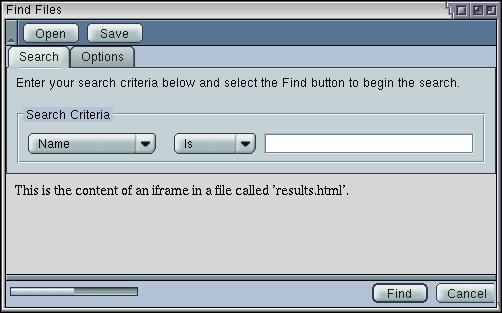
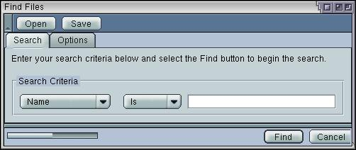

Splitters
Here, we'll look at how to add splitters to a window.
Splitting a Box
There may be times when you want to have two sections of a window where the user can resize the sections. An example is the Mozilla browser window, where you can change the size of the sidebar panel by dragging the bar in-between the two frames. You can also hide the sidebar by clicking the notch.
This feature is accomplished by using an element called a splitter. It creates a skinny bar between two sections which allows the sides to be resized. You can place a splitter anywhere you want and it will allow resizing of the elements that come before it and the elements that come after it in the same box.
When a splitter is placed inside a horizontal box, it will allow resizing horizontally. When a splitter is placed inside a vertical box, it will allow resizing vertically.
The syntax of a splitter is as follows:
<splitter
id="identifier"
state="open"
collapse="before"
resizebefore="closest"
resizeafter="closest">The attributes are as follows:
- idThe unique identifier of the splitter.
- stateIndicates the state of the splitter. Set this to open, the default, to have the split panel initially open or set it to collapsed to have one of the panels shrunk down (collapsed) and the other occupying all of the space.
- collapseThis indicates which side of the panel should collapse when the splitter notch (or grippy) is clicked or set into a collapsed state. Set this to before for the element before the spliiter, or after for the element after the splitter. If you set this to none, which is also the default, the splitter grippy does not collapse when clicked.
- resizebeforeWhen the splitter is dragged, the elements to the left resize. This attribute indicates which element should resize. Set this to closest to have the element immediately to the left of the splitter resize. Set this to farthest to have the element that is the farthest away from the splitter to the left resize. (The first element in the box). The default value is closest.
- resizeafterWhen the splitter is dragged, the elements to the right resize. This attribute indicates which element should resize. Set this to closest to have the element immediately to the right of the splitter resize. Set this to farthest to have the element that is the farthest away from the splitter to the right resize. (The last element in the box). This attribute can also be set to grow, in which case the elements to the right of the splitter do not change size when the splitter is dragged, but instead the entire box changes size. The default value is closest.
If you set the collapse attribute, you should also add a grippy element inside the splitter which the user can use to collapse the element.
An example would be helpful here:
Example 4.6.1: Source View<vbox flex="1">
<iframe id="content-1" width="60" height="20" src="w1.html"/>
<splitter collapse="before" resizeafter="farthest">
<grippy/>
</splitter>
<iframe id="content-2" width="60" height="20" src="w2.html"/>
<iframe id="content-3" width="60" height="20" src="w3.html"/>
<iframe id="content-4" width="60" height="20" src="w4.html"/>
</vbox> Here, four iframes have been created and a splitter has been placed in-between the first and second one. The collapse has been set to a value of before, meaning that if the splitter grippy is clicked on, the first frame would disappear and the splitter and the remaining frames would shuffle to the left. Ths splitter grippy is drawn centered inside the splitter.
The splitter has been given a resizeafter value of farthest. This means that when the splitter is dragged, the farthest element after it will change size. In this case, frame 4 will change size.
A value has not been specified for resizebefore so it will default to a value of closest. In this case, there is only one frame before the splitter, so frame 1 will change size.
Frames 2 and 3 will only change size if you drag the splitter far enough to the right that frame 4 has reached its minimum size.
The 4 panels with the splitter in a collapsed state:

An image of the 4 panels with the splitter resized to the right is shown below. Notice how the middle two panels have not changed size. Only panel 1 and panel 4 have changed size. You can just see part of the fourth panel. If you continue to drag the splitter to the right, the other two panels will shrink.

You can use the style properties such as min-width, max-height on the iframes to specify minimum or maximum widths or heights in the box. If you do, the splitter will detect this and not allow the user to drag the splitter past the minimum and maximum sizes.
For example, if you specified a minimum width of 30 pixels on panel 4 above, it would not shrink below that size. The other two panels would have to shrink. If you set the minimum width of panel 1 to 50 pixels, you would only be able to drag the splitter 10 pixels to the left (as it starts at 60 pixels wide). You can still collapse the splitter however.
You can also place more than one splitter in a box if you want, in which case you could collapse different parts of it. Similarly, you do not have to collapse just iframes. Any element can be collapsed.
Splitter Example
Let's see what the find file dialog looks like with a splitter in it. One possibility would be to add the results of the search in the dialog. We'll add an area in-between the search criteria and the buttons along the bottom. A splitter will allow you to collapse, or hide, the search results.
</tabbox>
<iframe src="results.html"/>
<splitter resizeafter="grow"/>
<hbox>Here, a splitter and an iframe have been added to the dialog. We don't need the spacer after the tabbox any more so we can remove it. The content of the frame is contained in a file called 'results.html'. Create this file and put whatever you want in it for now. The iframe will be replaced later with a results list when we know how to create it. For now, it serves to demonstrate the splitter.
The splitter has been set to a collapse value of before meaning that the element just before the splitter will collapse. Here, it is the iframe. As the images below show, when the grippy is clicked, the iframe is collapsed and the buttons shuffle up.
The resizeafter attribute has been set to grow so that the elements after the splitter push themselves down when the splitter is dragged down. This results in the content of the frame growing to any size. It should be noted that the window does not resize itself automatically. You'll also notice that this is a horizontal splitter because it has been placed in a vertical box.
Normal State:

Collapsed State:

(Next) Next, we'll look at how to create a scroll bar.
Examples: 4.6.1